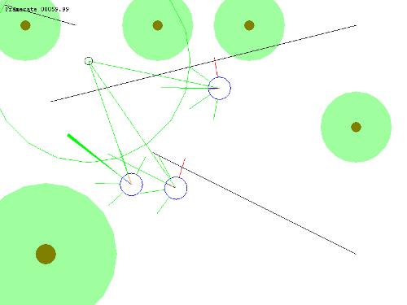

Games
From the dissatisfaction of working for large corporations - some of which are in industries I do not agree with - to create and customise enterprise Java applications, I felt the need for a change. I went to the games industry for the challenge, the infinately more interesting products and for the opportunity to make software that does good. It is very important to me now that whatever I do in life, work included, is for a positive end. I studied at Media Design School to assist in the change to the games industry.
If you are looking for people to work on a serious game title, get in touch. I'm always open to new opportunities to help create good games.
Competitions
Comvita Move
Comvita hosted a competition open only to Media Design School students to design a game that would make use of Fitbit to encourage fitness. I don't think I can mention specifics of my entry yet but I won the 2nd place prize.
Global Game Jam 2013
I teamed up with Stephen Knightly (the chairperson of the NZGDA) and a deadly team of artists to create the game Cupidity in 48 hours using GameMaker. Here's the official entry.
Source
Repository on GitHub
Download
Windows: cupidity.zip
Controls
Shoot arrows on the sound of the heart beat. Click the left mouse button to fire the first arrow on the first thud of the heart beat, the second will automatically shoot on the second thud of the heart beat.
|
|
Screenshot

|
Talks
Pecha Kucha Night Auckland #34
I gave a talk on "Games for Good" at the 34th Auckland Pecha Kucha night. The images are a bit ahead of the audio in the video.
Personal Projects
The Simplicity Engine

The Simplicity Engine is a homegrown component based game engine I created. Originally it was written in Java but I ported it to C++11. This engine has been superceded by the GazEngine middleware I used for my projects at Media Design School where I could not use C++11. The aim now is to port the much more comprehensive and tested GazEngine back to C++11.
Source
Repository on GitHub
|
|
Code
#include <simplicity/Simplicity.h>
int main()
{
Simplicity::addEngine(...);
Simplicity::addEntity(...);
Simplicity::play();
return 0;
}
|
Media Design School
Here are a bunch of demos from my studies at Media Design School.
GazEngine
GazEngine is the middleware that I developed during my time at Media Design School and is used with the majority of the demos that follow (except for a couple that use the GDE middleware provided by Media Design School). It was based on earlier work I had done to create the simplicity engine but that engine was in C++11 which could not be used for school projects.
Source
Repository on GitHub
Features
- Plug and Play Engine Architecture - Allows engines to be swapped in and out with minimal changes required e.g. swapping from DirectX to OpenGL.
- Component Based Architecture - Entities are constructed using composition, not inheritance to avoid class heirarchy explosions. Components are also interfaced to minimise dependencies on particular implementations.
- Messaging - Messages are mediated to allow swapping in and out of possible message sources and destinations with minimal changes e.g. swapping from WinApi to FreeGLUT.
- ODBC - Wrapper classes for the ODBC API.
- Maths - Matrix and Vector implementations and other useful functions.
- WinApi Engine - An engine that creates a WinApi window and acts as a message source for WinApi events.
- GDI Engine - An engine that renders models using the GDI API.
- Direct3D Engine - An engine that renders models using Direct3D 10.
- FreeGLUT Engine - An engine that creates a FreeGLUT window and acts as a message source for FreeGLUT events.
- OpenGL Engine - An engine that renders models using OpenGL 2 i.e. the fixed function pipeline.
- Homegrown Physics Engine - A very basic partial implementation of physics.
- PhysX Engine - An engine that simulates physics using PhysX.
- Bullet Engine - An engine that simulates physics using Bullet physics.
|
|
Code
#include <gazengine/GazEngine.h>
int main()
{
GazEngine::addEngine(...);
GazEngine::addEntity(...);
GazEngine::play();
return 0;
}
|
Connect 4
This variation of Connect 4 allows multiple connections of 4 to be made by each player. The game ends when the board is full and the winner is the player who has made the most connections.
Source
Repository on GitHub
Download
Windows: connect4.zip
Controls
Use the left mouse button to select which column you want to drop a token into.
Features
- An AI opponent who decides which move to take using a red-black tree with alpha-beta pruning.
|
|
Screenshot

|
Steering
Steering behaviours give autonomous characters "the ability to navigate around their world in a life-like and improvisational manner" (?). This demo uses whiskers, repulsion zones and approach radii as well as various other techniques to acheive this.
Source
Repository on GitHub
Download
Windows: steering.zip
Controls
Move the mouse around the window so the cats have a moving target.
Features
- Cats seek the mouse.
- Cats have whiskers which they use to avoid collisions with other cats and static obstacles.
- Trees and the ends of walls have repulsion zones which the cats react to.
- Repulsion zones and whiskers effect both the speed and desired heading of the cats.
- If a cat gets stuck, it will attempt to turn around.
- The mouse is surrounded by a large approach radius, when the cats enter it they will begin to slow down.
- Cats turn faster when they are facing away from the mouse.
- Cats travel faster when they are not turning (or turning slowly).
|
|
Screenshot

|
Mob Mole Madness
The AI in this game combines path finding, steering, state machines, world exploration, visual debugging ...
Source
Repository on GitHub
Download
Windows: mobmolemadness.zip
Controls
Use the arrow keys to move the squirrel around the map. Moving gives off vibrations which the moles can detect so be careful not to move too much when close to them. Collect the acorns and take them back to your holes to complete the level.
Features
|
|
Screenshot

|
Graphics: Technical Demo
This demo combines vertex, pixel and geometry shaders, depth and stencil buffers, level of detail, normal mapping, skeletal animation and mesh loading implemented with the Direct3D 10 programmable pipeline.
Source
Repository on GitHub
Download
Windows: graphicstechnicaldemo.zip
Controls
- WASD - Move chuck around the surface of the world.
- F1 - Skip the intro.
- F2 - Change the distance at which the LOD models change so that it is obvious when they change.
- F3 - Toggle the use of normal maps.
- F4 - Toggle the cartoon shading used on chuck.
- F5 - Toggle the outlines (there is a known issue where the outlines can cause performance problems, disable this if it is running slowly).
- F6 - Toggle the grayscale shading around chuck.
- F7 - Toggle the shadow volume (I haven't got this finished so it looks a bit crazy!).
Features
- Triangle flipping animation during the intro that constructs the models.
- Discrete LOD on the tree models.
- Normal mapping on the world models.
- Cartoon shading on chuck.
- Thick outlines around the models.
- Greyscale shading on the world model around chuck.
- A floating cube with skeletal animation.
|
|
Screenshot

|
Snake
A multiplayer version of the game 'snake' found on many a Nokia phone.
Source
Repository on GitHub
Download
Windows: Snake.exe
Controls
- WASD - Move your snake around the level.
- Tab - Show the score board.
Features
- Up to 16 players
- Persistent high scores (requires appropriate ODBC data source)
|
|
Screenshot

|
Grumpy Birds
...
Grumpy Birds 3D
...
3D World
...